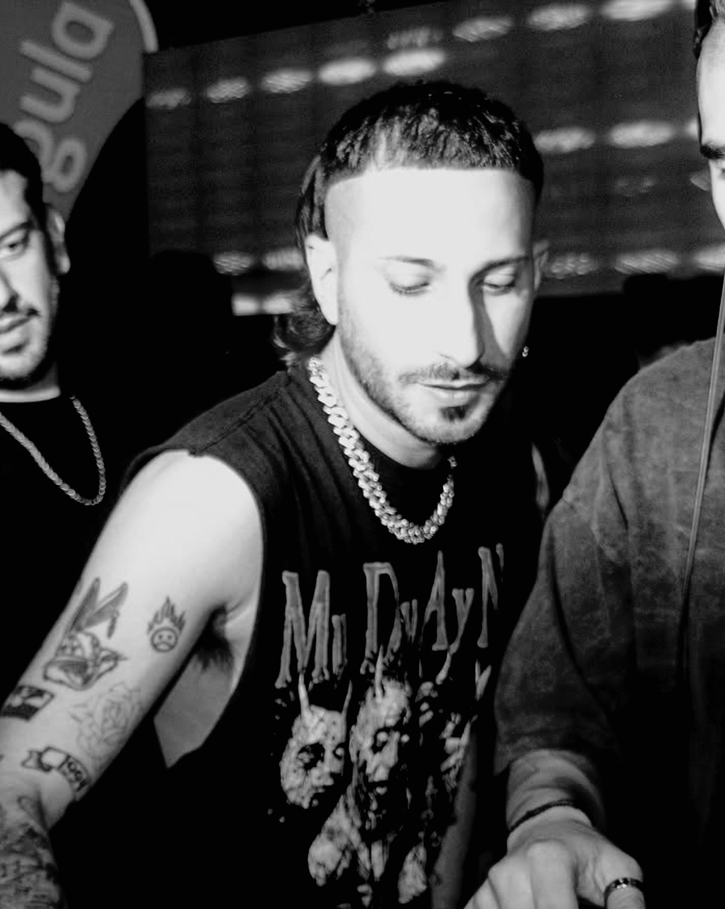

Nosotros
Detrás de KatDog también están las personas que le dan vida al proyecto.

Tribi Bernel
Tribi es espontáneo, sociable y siempre tiene energía para proponer algo nuevo. Disfruta conectar con los demás y tiene una personalidad divertida y afectuosa que se hace notar tanto arriba como abajo del escenario.
Lautaro Latorre
Lau es tranquilo, observador y práctico. Suele tomarse su tiempo para entender las cosas y encontrar soluciones. Detrás de su perfil reservado hay una persona compañera, cariñosa y siempre atenta a quienes lo rodean.